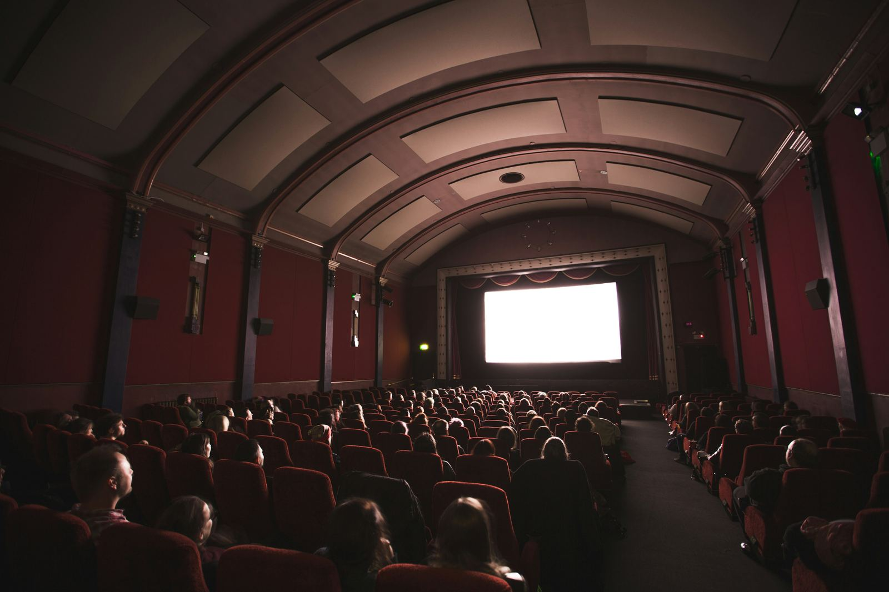

Discover Italians' cultural trends and preferences. Explore how Italians engage with literature, cinema, museums, and more. Learn about changes over the years and compare cultural participation in Italy with other European countries.
Scopri le tendenze e le preferenze culturali degli Italiani. Esplora come gli Italiani si coinvolgono con la letteratura, il cinema, i musei e altro ancora. Confronta i cambiamenti nel tempo e la partecipazione culturale in Italia rispetto ad altri paesi europei.
L'Italia è celebre per la sua ricca eredità culturale, con radici che risalgono agli Etruschi, ai Greci e ai Romani, evidenti in tutto il territorio e nei tesori custoditi nei musei. Ma qual è il rapporto degli Italiani con la cultura? Dati alla Mano ha intervistato due ricercatrici Istat, Emanuela Bologna e Miria Savioli, che hanno esaminato da vicino la partecipazione culturale nel paese.
Gli Italiani leggono poco?
I dati confermano che solo il 41,4% degli Italiani sopra i sei anni legge libri per piacere ogni anno. La lettura è più diffusa tra le donne, con un vantaggio del 10% rispetto agli uomini. Le abitudini variano anche regionalmente, con un picco di lettori nelle province autonome di Trento e Bolzano e una percentuale molto più bassa in Calabria.

Come è cambiata la lettura in Italia nel tempo?
Negli ultimi vent'anni, abbiamo visto alti e bassi nella lettura: dopo un aumento fino al 2010, abbiamo assistito a una diminuzione, specialmente tra i giovani. Le cause includono la crisi economica e la concorrenza del web, che ha cambiato il modo in cui i giovani interagiscono con i contenuti.
Quali sono le attività culturali più popolari?
Il cinema rimane in cima alla lista, nonostante una riduzione delle visite alle sale e un aumento dello streaming. Le visite ai musei e ai siti archeologici seguono da vicino come seconde e terze attività più amate.

Come ci confrontiamo con altri Paesi europei?
Nel 2015, l'Italia aveva una partecipazione inferiore alla media europea per teatro, concerti e balletti classici. Ad esempio, la Francia aveva una partecipazione del 54,8%, mentre l'Italia si fermava al 25,3%. Tuttavia, le visite ai musei mostravano distanze meno significative.
Ci sono segnali di miglioramento?
Sì, c'è un crescente interesse delle donne per il teatro e la musica classica, insieme a una maggiore partecipazione agli eventi culturali tra i giovani e gli anziani. Questo suggerisce che le generazioni più istruite stanno contribuendo a una maggiore partecipazione culturale negli ultimi anni.
fonte: Gli italiani e la cultura
Parole Chiave
| Italia | Il paese in cui si svolge la cultura descritta nel testo. |
| Cultura | Conoscenze e pratiche artistiche e sociali di una comunità. |
| Ascendenze | Origini o discendenze, riferendosi qui a quelle storiche. |
| Territorio | Area geografica o regione. |
| Tesori | Oggetti di grande valore o importanza. |
| Musei | Luoghi dove sono esposte opere d'arte o reperti storici. |
| Rapporto | Connessione o legame tra persone o cose. |
| Italiani | Persone originarie o abitanti dell'Italia. |
| Libri | Oggetti contenenti scritti stampati, come romanzi o saggi. |
| Lettori | Persone che leggono libri o testi. |
| Percentuale | Rapporto tra una parte e il totale, espresso in centesimi. |
| Genere | Categoria o tipo di qualcosa. |
| Quotidiani | Giornali pubblicati ogni giorno. |
| Diminuzione | Riduzione o calo di quantità o numero. |
| Comportamenti | Modi in cui le persone si comportano o agiscono. |
| Vantaggio | Beneficio o miglioramento rispetto agli altri. |
| Diminuisce | Diventa più piccolo o inferiore in quantità o numero. |
| Abitudini | Modi di fare le cose in modo regolare. |
| Interessi | Cose che catturano l'attenzione o la curiosità di qualcuno. |
| Fruitori | Persone che usufruiscono o godono di qualcosa. |
| Cinema | Luogo dove vengono proiettati film. |
| Streaming | Trasmissione di contenuti multimediali via internet. |
| Musei | Luoghi che ospitano opere d'arte, reperti o collezioni storiche. |
| Mostre | Eventi pubblici in cui vengono esposti oggetti o opere d'arte. |
| Archeologici | Relativo alla ricerca e allo studio delle civiltà antiche. |
| Monumenti | Strutture o edifici di interesse storico o artistico. |
| Confronto | Azione di mettere a confronto due o più cose per valutarle. |
| Partecipazione | Coinvolgimento o presenza in un'attività o evento. |
| Crescendo | Aumento graduale o progressivo. |
Esercizio
Domande
- Quali culture antiche hanno influenzato l'Italia, secondo il testo?
- Quanti Italiani leggono libri per piacere ogni anno, secondo i dati del 2020?
- Chi legge di più tra uomini e donne, secondo il testo?
- Perché il numero di persone che frequentano il cinema al cinema è diminuito?
- Quali sono le attività culturali più popolari tra gli Italiani, secondo il testo?